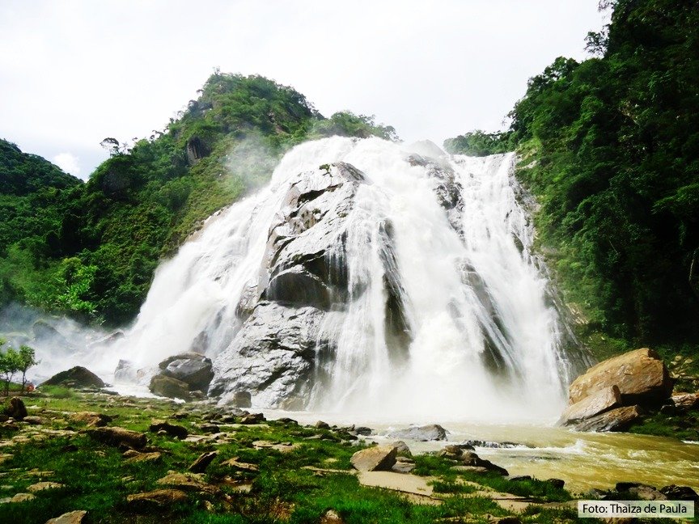
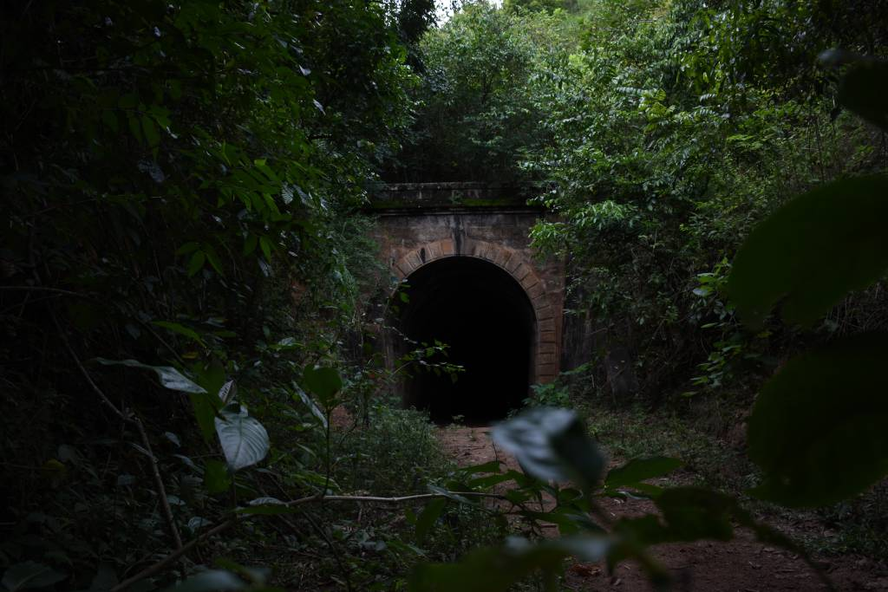

Cachoeira da Fumaça
Ponto turístico de Alegre localizado no distrito de Celina. Situado na região geográfica e turística do Caparaó, teve sua área original desapropriada em agosto de 1984, por meio do decreto n°2791-E, sendo instituído e ampliado, em fevereiro de 2009, por meio dos decretos n°2220-R e n°155-S. O Parque protege nascentes e remanescentes florestais de parte da bacia hidrográfica do rio Braço Norte Direito, um dos principais afluentes do rio Itapemirim.
O Parque possui este nome pela presença da exuberante cachoeira de 144 metros de altura, considerada a maior do Espírito Santo com água perene. Devido ao seu volume e força, a queda d' água ao se chocar contra as rochas, forma uma nuvem de gotículas que mais parece uma nuvem de "fumaça".
A precipitação média anual está entre 1400m e 1500mm, com os períodos secos e úmidos bem distintos ao longo do ano, sendo os meses de verão o período de maior acumulação.
Com predomínio de matas de encosta, matas ciliares e vegetação rupestre, sua flora se constitui de 222 espécies de angiospermas, pertencentes a 171 gêneros e 60 famílias, onde 80,18% são de espécies nativas da Mata Atlântica. Neste ambiente se destacam as bromélias, helicônias, jacarandás, figueiras, angicos e outros. Na fauna são conhecidas 30 espécies de mamíferos não voadores, distribuídos em 15 famílias, e uma diversidade de aves e répteis. Alguns dos representantes da fauna são: teiú, lontra, gato do mato pequeno, jaguatirica, paca, tatu, cachorro do mato, maitaca, martin-pescador-grande, entre outros.
A geologia predominante é de rocha metamórfica, sendo o gnaisse bastante presente. O relevo é considerado acidentado, com a maior parte da área formada por encostas íngremes e morros, mas também possui a presença de planície fluvial e terraços.
No entorno estão pequenas comunidades rurais, que possuem como base econômica a produção agropecuária, sendo o turismo uma alternativa complementar de renda.
Mais informações.
Túnel Crisciuma
Localizado próximo a zona rural de alegre visitado em passeios de bicicleta. O Túnel dos Ingleses de Baixo, com 80m de extensão, aproximadamente 03Km do Centro da cidade.
Mais informações.
| Alegre | ||
|---|---|---|
| População Estimada | 29.869 pessoas (2021) | Fonte: IBGE |
| Área Territorial | 756,860 km² | |
| IDH | 0,721 | |
| PIB | R$ 476.962,31 | |
| PIB per capita | R$ 15.854,35 | |